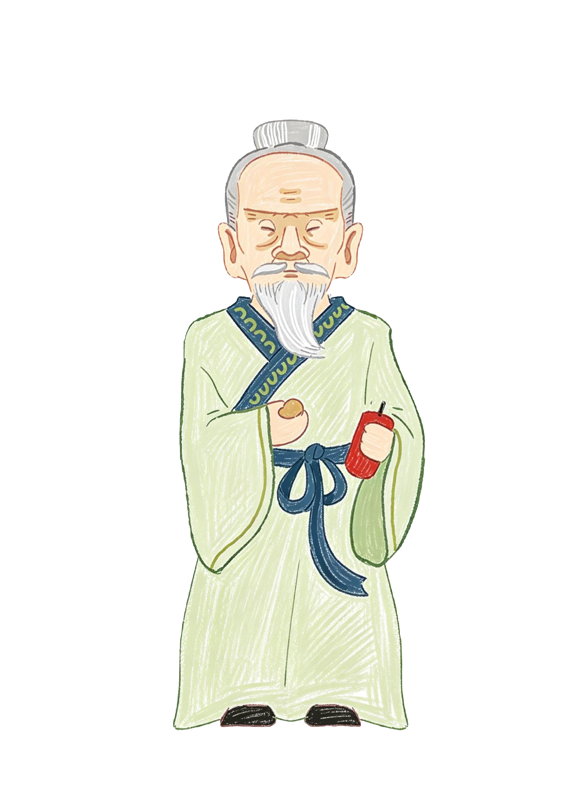

一缕烟火，千年传承
你是一名远道而来的年轻人，循着祖辈留下的一卷《天工录》残页，来到花炮之乡——江西上栗。在这里，你盘下一间破旧的烟火铺，从配药、卷筒、装药到燃放，一步步重拾失传的制炮技艺，并在与镇上众人的相识相知中，揭开《天工录》与花炮始祖李畋之间尘封千年的约定。
唐时，上栗人李畋以竹筒装硝，燃爆驱邪，被后世尊为"花炮始祖"。千年之间，上栗烟火随商路远行，照亮无数节庆之夜；然而时移世易，古法技艺渐被遗忘，记载着七十二道制炮工序的《天工录》也散佚民间。
游戏开始于一个除夕前夜。你继承的烟火铺，正是当年李畋传人最后落脚之处。铺中尘封的药碾、墙上的配方残句、邻里口耳相传的老故事……都指向同一个秘密：集齐《天工录》散页，复原古法制炮，为镇上重办一场百年未有的"岁岁烟火大会"。
经营烟火铺之余，你将走访真实取材的上栗街巷，结识性格各异的匠人、商贾与乡邻——他们既是你的顾客，也是非遗传承路上不可或缺的同行人。每一枚亲手制成的烟花升空，都是一次跨越千年的回应。
（以上为示例文案，可直接在 story.html 中替换为正式剧情文本。）
花炮始祖 · 李畋

相传李畋以竹筒贮硝，燃之爆裂有声，用以驱散山岚瘴气、禳除邪祟，乡人争相效仿，花炮之艺由此发端。后世花炮匠人奉其为始祖，立庙祀之，香火绵延至今。
在游戏中，李畋不仅是贯穿主线的精神指引，更将以特殊形式"现身"，指引玩家领悟《天工录》中的古法技艺。（立绘与介绍为占位内容，替换 assets/img/story/litian.png 与本段文字即可。）